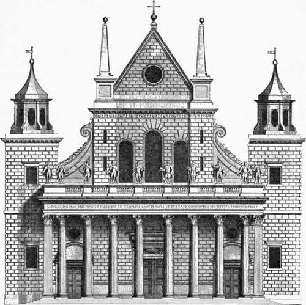

Jones And Wren. Part 2
Description
This section is from the book "Character Of Renaissance Architecture", by Charles Herbert Moore. Also available from Amazon: Character of Renaissance Architecture.
Jones And Wren. Part 2
Every form and feature of the native art is eliminated. The Elizabethan house, however overlaid with foreign elements, was English in its primary forms and expression. But here Inigo Jones swept away everything English, and substituted a Palladian scheme that is foreign to England in every particular. The low-pitched roof, the plain rectangular outline, and the narrow undivided window openings are as Italian as the orders with which the fagade is overlaid. But such was the state of taste among the influential classes that these features were approved, and the design was applauded with acclamation. "It spread," says Cunningham, " the love of classic architecture far and wide, and there was soon a growing demand for works which recalled Athens to the learned, and presented something new to the admiration of the vulgar."1 The learned had then small knowledge of Athenian architecture, and even now many learned people fail to consider that there was never in Athens anything at all like Palladian design.
The fagade of the Banqueting Hall (Plate X) is in two stories on a low basement, and has a rusticated wall of smooth-faced masonry, with an engaged order in each story, and a parapet with a balustrade over the main cornice. The central part of this fagade has its wall slightly advanced, and in each story the orders, Ionic and Corinthian respectively, have engaged columns against the projecting middle part, and pilasters on either side, a pair of them being set together at each end. These pilasters taper and have strong entasis, so that parts of those on the angles Overreach the end walls. The entablatures are carried by the walls, and thus have to be broken into ressauts to cover the columns and pilasters. The structural function of all these superimposed columns and pilasters is therefore only that of carrying the ressauts of the parapet. The rectangular windows, of severely classic design, have pediments, alternately curved and angular, in the lower story, and flat cornices only in the story above, while a frieze below the main entablature is adorned in Roman fashion with masks and festoons.
It is surprising that such a mechanical reproduction of a foreign style should ever have called forth high praise from Englishmen. The design exhibits no invention, no creative adaptation of foreign elements to new conditions, and therefore no reason for the use of such elements. The low-pitched roof (wholly invisible from any near point of view) is unsuited to the English climate, and the parapet and balustrade are equally inappropriate. Yet of this design Walpole remarks 1 that " it stands as a model of the most pure and beautiful taste." And an earlier expression of the feeling which prevailed among the dilettanti of the time is found in the text which accompanies Kent's well-known book of Jones's designs2 as follows : " If the reputation of this great man doth not rise in proportion to his merits in his own country, 'tis certain, in Italy, which was his school, and other Parts of Europe, he was in great esteem ; in which places, as well as in England, his own works are his monument and best Panegyrick; which, together with those of Palladio, remain equal Proofs of the Superiority of those two great Masters to all others."
1 Cunningham, op. cit., p. 115.
Plate X
Banqueting Hall, Whitehall London
The whole scheme for the palace of Whitehall is fully illustrated by Kent.3 The plan is a vast rectangle measuring 874 by 1151 feet, and comprising seven courts, of which the central one toward the park encloses a circular gallery. The long blocks are broken by rectangular pavilions, one on the axis of each of the four sides, one at each angle, and others at intervals between. It is thus French in character, rather than Italian, and suggests a derivation from De l'Orme's plan of the Tuileries. It is not worth while to examine the architectural character of the elevation fully in detail; but, in addition to the Banqueting Hall already noticed, it may be well to examine several other parts which further illustrate the art of Inigo Jones. The axial pavilions are flanked with rectangular towers in three stages, each stage adorned with an order, and surmounted with an octagonal cupola. On the Westminster front the basement has a Doric order with a modification of De l'Orme's column, in which the larger stones are square. This basement (Fig. 133) has a mezzanine marked by an entablature which is cut in the middle by the keystones of a fiat arch over a window beneath. The great entablature in this case is borne by the columns, and the order has thus a structural character (though it has no structural reason for being) which the orders of the Banqueting Hall do not have. The only other feature of Whitehall that need be mentioned is the fagade of the circular court enclosed by the king's apartments. This is a bizarre design in two stages, with a so-called Persian order below and an order of caryatids above. The bearing members of these orders stand out beyond the entablatures, and thus support nothing but ressauts, while a balustrade with statues crowns the whole.
1 Cunningham, op. cit., vol. 2, p. 266.
2 The Designs of Inigo Jones, consisting of Plans and Elevations for Publick and Private Buildings, by William Kent, London, 1727.
3 Plates 1 to 52 inclusive.

Fig. 133. — Basement of a part of Whitehall.
With all his zeal for reform by a stricter conformity to classic models, the designs of Inigo Jones were never truly classical, and they often exhibit ludicrous aberrations. He had no true conception of the principles of classic art, as no architects of the Renaissance ever had. The Palladian architecture, which he mainly strove to follow, was itself, as we have seen, far from true to classic design. Some of these aberrations are strikingly shown in the west front which he built to the nave of old St. Paul's cathedral. In attempting to apply classic details to such a building he was obliged to depart widely from classic principles. His scheme, as shown in Kent's print (Fig. 134) is as incongruous a mixture as was ever produced by the Elizabethan craftsmen. This front, in its main outline, has to follow the form of the Mediaeval structure, with its high nave and low aisles. To this mediaeval form the architect has affixed a variety of features derived from Roman, Renaissance, and even Egyptian sources. He has crowned the wall with a pseudo-classic cornice surmounted by a steep gable, he has set obelisks on Roman pedestals over the buttresses, affixed reversed consoles to the clerestory walls, and built a Corinthian portico with a balustrade upon its entablature, and completed the scheme with flanking towers crowned with lanterns. It is a thoroughly barbarous composition, which even Walpole complains of as follows : " In the restoration of that cathedral he made two capital faults. He first renewed the sides with very bad Gothic, and then added a Roman portico, magnificent and beautiful indeed, but which has no affinity with the ancient parts that remained, and made his own Gothic appear ten times heavier." 1
Fig. 134. — Front of old St. Paul's by Inigo Jones.
Continue to:
- prev: Chapter XIV. Architecture Of The Renaissance In England. II. Jones And Wren
- Table of Contents
- next: Jones And Wren. Part 3